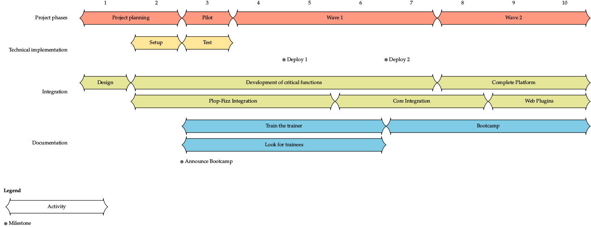

Blueprint
The Blueprint project aims at delivering a full featured library of high quality graphics and diagrams for project managers and system desginers.
It is written as a library for John Hobby's METAPOST, we can take advantage of METAPOST declarative language and macro language to produce high-quality and easy to maintain graphics. It can already be used to create these technical drawings:
- Milestones diagrams
- Project schedules
- UML Diagrams
- Charts
It is written by Michael Grünewald and is distributed under the CeCILL-B license agreement.
Example of a timeline graphic

Example of a schedule graphic

Example of a UML component diagram

Example of a chart with legends